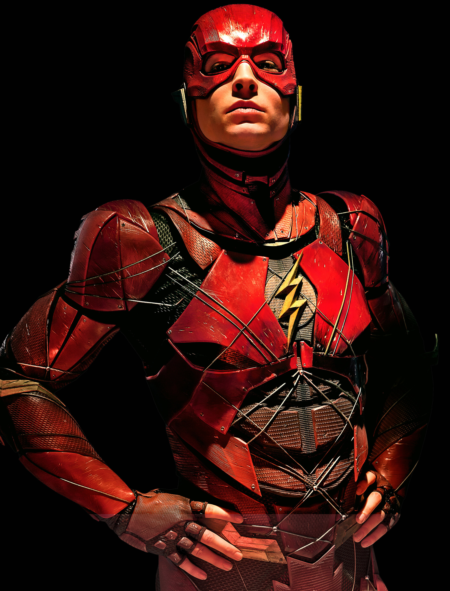

FLASH / BARRY ALLEN
"Flash" é um nome compartilhado por diversos super-heróis da DC Comics. Criado pelo escritor Gardner Fox e pelo artista Harry Lampert, o Flash original estreou em Flash Comics #1 (1940). Também chamado de Velocista Escarlate, o Flash possui velocidade e reflexos sobre-humanos e viola certas leis da física, podendo ultrapassar a velocidade da luz. Até então, quatro personagens ganharam a supervelocidade de modos diferentes e assumiram a identidade de Flash: Jay Garrick (1940-1956), Barry Allen (1956-1986, 2008-presente), Wally West (1986-2006, 2007-presente) e Bart Allen (2006-2007). Barry Allen é considerado o primeiro super-herói da Era de Prata dos Quadrinhos e permaneceu como um dos mais populares desde então. Cada versão do Flash foi um membro-chave ou da Sociedade da Justiça da América ou da Liga da Justiça, os principais grupos da DC. Uma versão de Barry Allen foi vista em um seriado de TV estrelado por John Wesley Shipp, porém o mesmo só ganhou grande notoriedade com o grande público, depois do lançamento da série “The Flash”, que estreou em 2014, estrelada por Grant Gustin.